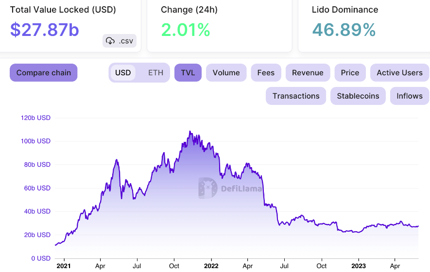

About Marinade Finance
Marinade Money is a dynamic and imaginative monetary innovation (FinTech) organization that has been causing disturbances in the monetary business. With a mission to engage people and organizations with savvy monetary arrangements, Marinade Money offers a different scope of administrations intended to streamline and improve monetary administration.
One of Marinade Money's key contributions is its state-of-the-art portfolio the executive’s stage, which use progressed calculations and information examination to assist clients with streamlining their speculations. Whether you're a carefully prepared financial backer or simply beginning your monetary excursion, Marinade Money gives customized bits of knowledge and suggestions to assist you with pursuing informed choices.
Besides, Marinade Money is focused on monetary instruction and straightforwardness, guaranteeing that clients approach the information and devices expected to accomplish their monetary objectives. Their devotion to client driven arrangements and mechanical development separates them as a forerunner in the steadily advancing scene of monetary administrations. Marinade Money is a name to look for those looking for savvy, ground breaking monetary arrangements.
One of Marinade Money's key contributions is its state-of-the-art portfolio the executive’s stage, which use progressed calculations and information examination to assist clients with streamlining their speculations. Whether you're a carefully prepared financial backer or simply beginning your monetary excursion, Marinade Money gives customized bits of knowledge and suggestions to assist you with pursuing informed choices.
Besides, Marinade Money is focused on monetary instruction and straightforwardness, guaranteeing that clients approach the information and devices expected to accomplish their monetary objectives. Their devotion to client driven arrangements and mechanical development separates them as a forerunner in the steadily advancing scene of monetary administrations. Marinade Money is a name to look for those looking for savvy, ground breaking monetary arrangements.
Uses of Marinade Finance:
Digital money, like Bitcoin, Ethereum, and numerous others, has a large number of purposes and applications. Here are the absolute most normal purposes of Marinade
Finance:Computerized Money:
Marinade Finance can be utilized as a computerized option in contrast to conventional monetary standards for regular exchanges. It considers quick and minimal expense cross-line installments.
Venture:
Many individuals purchase digital currencies as a speculation, trusting that their worth will increment over the long run. This is like putting resources into stocks or different resources.
Settlements:
Digital currency can be utilized to send cash across borders rapidly and with lower charges contrasted with customary settlement administrations. This is especially important for individuals in nations with restricted admittance to banking administrations.
Online Buys:
A few web-based retailers and specialist co-ops acknowledge digital currencies as a type of installment for labor and products.
Savvy Agreements:
Stages like Ethereum empower the production of brilliant agreements, which are self-executing contracts with the particulars of the understanding straightforwardly composed into code. They can mechanize cycles and eliminate the requirement for middle people in different ventures, including finance and lawful.
Decentralized Money (DeFi):
Digital currencies are at the center of the DeFi development, which looks to reproduce customary monetary administrations like loaning, getting, and exchanging on blockchain stages without conventional delegates like banks.
Tokenization of Resources:
Resources like land, workmanship, and even organization stocks can be tokenized on blockchain stages. This takes into consideration partial proprietorship and more straightforward exchange of possession.
Security:
A few digital currencies, as Monero and Zachs, focus on protection and namelessness highlights, making them engaging for clients who need to keep their monetary exchanges classified.
Gathering pledges:
Beginning Coin Contributions (ICOs) and Security Token Contributions (STOs) have been utilized as raising support systems for new companies and undertakings. Be that as it may, these strategies accompany administrative difficulties and dangers.
Gaming:
Digital currencies are utilized in gaming biological systems for purchasing in-game resources, exchanging virtual things, and empowering distributed exchanges inside virtual universes.
Supporting:
Digital currencies can be utilized as a fence against expansion and financial shakiness in certain nations. A few financial backers go to cryptographic forms of money during seasons of monetary vulnerability.
Training and Exploration:
Digital currencies have likewise been utilized in instructive and research settings to investigate blockchain innovation and its possible applications.
It's essential to take note of that the digital money space is quickly advancing, and new use cases keep on arising. In any case, the utilization of digital currencies additionally accompanies specific dangers, including cost unpredictability, administrative vulnerabilities, and security concerns, so people ought to practice mindfulness and lead careful examination prior to reaching out.
Finance:Computerized Money:
Marinade Finance can be utilized as a computerized option in contrast to conventional monetary standards for regular exchanges. It considers quick and minimal expense cross-line installments.
Venture:
Many individuals purchase digital currencies as a speculation, trusting that their worth will increment over the long run. This is like putting resources into stocks or different resources.
Settlements:
Digital currency can be utilized to send cash across borders rapidly and with lower charges contrasted with customary settlement administrations. This is especially important for individuals in nations with restricted admittance to banking administrations.
Online Buys:
A few web-based retailers and specialist co-ops acknowledge digital currencies as a type of installment for labor and products.
Savvy Agreements:
Stages like Ethereum empower the production of brilliant agreements, which are self-executing contracts with the particulars of the understanding straightforwardly composed into code. They can mechanize cycles and eliminate the requirement for middle people in different ventures, including finance and lawful.
Decentralized Money (DeFi):
Digital currencies are at the center of the DeFi development, which looks to reproduce customary monetary administrations like loaning, getting, and exchanging on blockchain stages without conventional delegates like banks.
Tokenization of Resources:
Resources like land, workmanship, and even organization stocks can be tokenized on blockchain stages. This takes into consideration partial proprietorship and more straightforward exchange of possession.
Security:
A few digital currencies, as Monero and Zachs, focus on protection and namelessness highlights, making them engaging for clients who need to keep their monetary exchanges classified.
Gathering pledges:
Beginning Coin Contributions (ICOs) and Security Token Contributions (STOs) have been utilized as raising support systems for new companies and undertakings. Be that as it may, these strategies accompany administrative difficulties and dangers.
Gaming:
Digital currencies are utilized in gaming biological systems for purchasing in-game resources, exchanging virtual things, and empowering distributed exchanges inside virtual universes.
Supporting:
Digital currencies can be utilized as a fence against expansion and financial shakiness in certain nations. A few financial backers go to cryptographic forms of money during seasons of monetary vulnerability.
Training and Exploration:
Digital currencies have likewise been utilized in instructive and research settings to investigate blockchain innovation and its possible applications.
It's essential to take note of that the digital money space is quickly advancing, and new use cases keep on arising. In any case, the utilization of digital currencies additionally accompanies specific dangers, including cost unpredictability, administrative vulnerabilities, and security concerns, so people ought to practice mindfulness and lead careful examination prior to reaching out.
Auction of Marinade Finance
For the purpose of this explanation, a fictional financial institution called Marinade Finance was created. In this speculative situation, we will investigate the activities and elements of Marinade Money, specifying how it works and the administrations it gives to its clients.
Marinade Money: Making Monetary Achievement
Marinade Money is a dynamic and inventive monetary establishment devoted to giving many monetary administrations to people, organizations, and associations. With a mission to assist clients with accomplishing their monetary objectives and explore the intricacies of the cutting-edge monetary scene, Marinade Money offers an exhaustive set-up of administrations intended to meet the different necessities of its clients.
1. Services for Investments Marinade Finance's core business is providing investment services that are tailored to each client's specific objectives and risk tolerances. Whether clients are saving for retirement, planning for education, or building wealth, Marinade's team of knowledgeable financial advisors collaborate closely with them to develop individual investment strategies. Stocks, bonds, mutual funds, and other alternative investments are just a few of the investment options Marinade Finance offers.
2. Abundance The executivesMarinade Money comprehends that overseeing abundance goes past making speculations. It includes safeguarding and developing abundance over the long run while likewise limiting dangers. Estate planning, tax optimization, and risk management strategies are all part of the institution's comprehensive wealth management services. The experts at Marinade put in a lot of effort to make sure that clients' wealth is managed well and in line with their long-term goals.
3. Solutions for Banking Marinade Finance offers a comprehensive range of banking options, including loans, certificates of deposit, checking and savings accounts, and more. Marinade Finance provides adaptable banking options that are tailored to meet the particular financial requirements of its customers, whether those clients require a straightforward checking account or a line of credit for their business. For account management convenience, the institution also provides online banking and mobile app services.
4. Financial Planning It is essential to plan for the future, and Marinade Finance excels at assisting clients in the creation of comprehensive financial plans. The purpose of these plans is to provide a path to achieving both short-term and long-term financial goals. Plans that address saving goals, planning for retirement, debt management, and other topics are developed in close collaboration with clients by the institution's financial advisors.
5. Risk The boardUnderstanding and overseeing monetary dangers is a crucial part of Marinade Money's tasks. Customers can get insurance products from the company that help them protect their loved ones and assets. Marinade Finance helps clients choose the best coverage options to reduce potential risks, whether they need life insurance, health insurance, or property insurance.
6. Financial Education Marinade Finance is committed to educating its customers to their full potential. The foundation conducts studios, online classes, and workshops on different monetary points, including planning, effective money management, and retirement arranging. By giving instructive assets, Marinade Money expects to improve monetary education and assist clients with pursuing informed monetary choices.
7. Community Engagement Marinade Finance is committed to giving back to the community in addition to providing its core services. Employees are encouraged to volunteer their time and skills for a variety of community projects, as well as to support charitable endeavors and sponsor local events. Marinade Money trusts in being a mindful corporate resident and having a beneficial outcome on the networks it serves.
In conclusion, Marinade Finance is a flexible financial institution that places a high value on its customers' financial security. Through a great many administrations and a guarantee to customized monetary arrangements, Marinade Money assists people and organizations with exploring the complicated universe of money while endeavoring to accomplish their monetary objectives. With an emphasis on development, schooling, and local area commitment, Marinade Money remains as a guide of monetary strengthening in the cutting-edge monetary scene.
2. Abundance The executivesMarinade Money comprehends that overseeing abundance goes past making speculations. It includes safeguarding and developing abundance over the long run while likewise limiting dangers. Estate planning, tax optimization, and risk management strategies are all part of the institution's comprehensive wealth management services. The experts at Marinade put in a lot of effort to make sure that clients' wealth is managed well and in line with their long-term goals.
3. Solutions for Banking Marinade Finance offers a comprehensive range of banking options, including loans, certificates of deposit, checking and savings accounts, and more. Marinade Finance provides adaptable banking options that are tailored to meet the particular financial requirements of its customers, whether those clients require a straightforward checking account or a line of credit for their business. For account management convenience, the institution also provides online banking and mobile app services.
4. Financial Planning It is essential to plan for the future, and Marinade Finance excels at assisting clients in the creation of comprehensive financial plans. The purpose of these plans is to provide a path to achieving both short-term and long-term financial goals. Plans that address saving goals, planning for retirement, debt management, and other topics are developed in close collaboration with clients by the institution's financial advisors.
5. Risk The boardUnderstanding and overseeing monetary dangers is a crucial part of Marinade Money's tasks. Customers can get insurance products from the company that help them protect their loved ones and assets. Marinade Finance helps clients choose the best coverage options to reduce potential risks, whether they need life insurance, health insurance, or property insurance.
6. Financial Education Marinade Finance is committed to educating its customers to their full potential. The foundation conducts studios, online classes, and workshops on different monetary points, including planning, effective money management, and retirement arranging. By giving instructive assets, Marinade Money expects to improve monetary education and assist clients with pursuing informed monetary choices.
7. Community Engagement Marinade Finance is committed to giving back to the community in addition to providing its core services. Employees are encouraged to volunteer their time and skills for a variety of community projects, as well as to support charitable endeavors and sponsor local events. Marinade Money trusts in being a mindful corporate resident and having a beneficial outcome on the networks it serves.
In conclusion, Marinade Finance is a flexible financial institution that places a high value on its customers' financial security. Through a great many administrations and a guarantee to customized monetary arrangements, Marinade Money assists people and organizations with exploring the complicated universe of money while endeavoring to accomplish their monetary objectives. With an emphasis on development, schooling, and local area commitment, Marinade Money remains as a guide of monetary strengthening in the cutting-edge monetary scene.

Marinade Finance creation
Title: Marinade Money: Marinade Finance stands out as a singular creation that has been simmering and evolving over time in the world of finance, where innovation and creativity frequently play a crucial role in achieving success. Introduction: A Recipe for Financial Success This financial idea is similar to the process of marinating, in which a variety of ingredients combine to enhance flavor and produce a dish that is delicious and satisfying. Marinade Finance is a financial success formula that brings together a variety of financial instruments, strategies, and technologies.
The Elements of Marinade Money Customary Venture Vehicles:
The groundwork of Marinade Money incorporates conventional speculation vehicles like stocks, securities, and land. These dependable fixings act as the base, similar to a marinade's essential fluid part. They give strength and an anticipated profit from speculation, offering a protected beginning stage for financial backers.
The Elements of Marinade Money Customary Venture Vehicles:
The groundwork of Marinade Money incorporates conventional speculation vehicles like stocks, securities, and land. These dependable fixings act as the base, similar to a marinade's essential fluid part. They give strength and an anticipated profit from speculation, offering a protected beginning stage for financial backers.
Options for Investing
Similarly, as a cook would add extraordinary flavors to improve the flavor profile of a dish, Marinade Money integrates elective speculations like confidential value, investment, and mutual funds. These investments introduce a level of diversity and risk that may result in higher returns; however, effective management of them necessitates a deeper comprehension and expertise.

Cryptocurrency and the Blockchain
The emergence of cryptocurrency and blockchain technology is analogous to the addition of an exciting new ingredient to a recipe. Marinade Finance is aware of these technologies' potential to improve financial transAuctions, lessen friction, and broaden investment options.
Information Examination and Computerized reasoning
In Marinade Finance, data analytics and artificial intelligence (AI) play a crucial role with the precision of a chef's knife. These innovations empower financial backers to examine immense measures of information, distinguish patterns, and go with informed choices. Simulated intelligence driven calculations can likewise computerize exchanging methodologies, making it conceivable to respond to quickly advertise changes.
Strategies for Managing Risk
Similarly, as a gifted cook adjusts flavors to make an agreeable dish, Marinade Money consolidates different gamble the board procedures. Using risk-adjusted return calculations, diversification, and hedging, investors can reap the benefits of financial marination without taking on too much risk.The Marinade CycleSimilar as marinating meat prior to barbecuing, Marinade Money includes a cautious and calculated process:
Selection: The careful selection of the ingredients is the first step. Based on their financial objectives, risk tolerance, and time horizon, investors must select the appropriate combination of technology, risk management strategies, and traditional and alternative investments.
Preparation: After selecting the ingredients, they must be prepared. This includes careful exploration, an expected level of effort, and the production of a thoroughly examined speculation methodology. Marinade Finance necessitates a balanced approach to asset allocation and diversification, just like a marinade necessitates the appropriate blend of spices.
Marination: Time and perseverance are required for the marination process. In finance, this relates to the drawn-out nature of speculations. Financial backers should let their portfolio "marinate" over the long haul, permitting the picked resources for develop and develop.
Monitoring: While marinating, it's crucial for screen progress routinely. Investors ought to examine their portfolio and make any necessary adjustments, just as a chef monitors the meat that is marinating. This could mean rebalancing the allocation of assets or adopting emerging technologies and strategies.
Serving: At last, after the marinade has done something amazing, now is the ideal time to serve the dish. This is equivalent, in finance, to making use of the gains from investments, whether they come in the form of dividends, capital appreciation, or interest income. Marinade Finance's ultimate objective is to build a financial portfolio with a satisfying and long-term return on investment.
The Advantages of Marinade Finance's Steady Returns: Marinade Finance offers the potential for higher returns than a conventional investment portfolio by combining traditional and alternative investments. The consideration of blockchain innovation and digital currencies can additionally support returns for those ready to embrace these resources.
Risk reduction: Marinade Money focuses on risk the executives, diminishing the probability of devastating misfortunes. Using AI-driven risk analysis and asset class and region diversification assist investors in navigating the sometimes-volatile financial markets.
Adaptability: Marinade Money perceives the significance of remaining current with innovative progressions and market patterns. Investors can adjust their strategies to take advantage of new opportunities and avoid potential pitfalls thanks to this adaptability.
Long-Term Expansion: Like a very much marinated dish that gets better with time, Marinade Money stresses the drawn-out development capability of ventures. Investors are encouraged to maintain their focus on their financial objectives and discourage impulsive trading with this strategy.
Accessibility: With the multiplication of computerized stages and venture applications, Marinade Money has become more open to a more extensive scope of financial backers. It's not generally saved for the tip-top; anybody with a web association can partake.
Preparation: After selecting the ingredients, they must be prepared. This includes careful exploration, an expected level of effort, and the production of a thoroughly examined speculation methodology. Marinade Finance necessitates a balanced approach to asset allocation and diversification, just like a marinade necessitates the appropriate blend of spices.
Marination: Time and perseverance are required for the marination process. In finance, this relates to the drawn-out nature of speculations. Financial backers should let their portfolio "marinate" over the long haul, permitting the picked resources for develop and develop.
Monitoring: While marinating, it's crucial for screen progress routinely. Investors ought to examine their portfolio and make any necessary adjustments, just as a chef monitors the meat that is marinating. This could mean rebalancing the allocation of assets or adopting emerging technologies and strategies.
Serving: At last, after the marinade has done something amazing, now is the ideal time to serve the dish. This is equivalent, in finance, to making use of the gains from investments, whether they come in the form of dividends, capital appreciation, or interest income. Marinade Finance's ultimate objective is to build a financial portfolio with a satisfying and long-term return on investment.
The Advantages of Marinade Finance's Steady Returns: Marinade Finance offers the potential for higher returns than a conventional investment portfolio by combining traditional and alternative investments. The consideration of blockchain innovation and digital currencies can additionally support returns for those ready to embrace these resources.
Risk reduction: Marinade Money focuses on risk the executives, diminishing the probability of devastating misfortunes. Using AI-driven risk analysis and asset class and region diversification assist investors in navigating the sometimes-volatile financial markets.
Adaptability: Marinade Money perceives the significance of remaining current with innovative progressions and market patterns. Investors can adjust their strategies to take advantage of new opportunities and avoid potential pitfalls thanks to this adaptability.
Long-Term Expansion: Like a very much marinated dish that gets better with time, Marinade Money stresses the drawn-out development capability of ventures. Investors are encouraged to maintain their focus on their financial objectives and discourage impulsive trading with this strategy.
Accessibility: With the multiplication of computerized stages and venture applications, Marinade Money has become more open to a more extensive scope of financial backers. It's not generally saved for the tip-top; anybody with a web association can partake.
Difficulties and Dangers
While Marinade Money offers many advantages, it's fundamental to recognize the difficulties and dangers related with this methodology:
Complexity: The different fixings and systems engaged with Marinade Money can be perplexing and require a profound comprehension of monetary business sectors, innovation, and hazard the executives.
Volatility: The highly volatile nature of cryptocurrencies and alternative investments can have a significant impact on portfolio value. This volatility must be anticipated by investors.
Liquidity Issues: Private equity and venture capital, two examples of alternative investments, can be hard to liquidate, making it hard to get money when you need it.
Changes to regulations: The administrative climate for blockchain and digital currencies is as yet developing. Financial backers need to remain informed about changes that could influence their ventures.
Overconfidence: Investors may take on more risk than they can handle because of the potential for higher returns in Marinade Finance. End Marinade Money is an inventive and imaginative way to deal with making monetary progress by joining conventional and elective ventures with state-of-the-art innovation and chance administration systems. It offers a variety of flavors and ingredients, much like a well-prepared meal, that, when carefully chosen and managed, can lead to a financially rewarding experience. Nonetheless, it is essential to approach Marinade Finance with a clear comprehension of its risks and complexities. Investors must achieve financial goals by balancing their portfolio's various components, just as a chef must achieve a harmonious dish by balancing the marinade's components. Marinade Finance can be a recipe for financial success in the ever-changing world of finance with patience, adaptability, and a commitment to long-term growth.
Complexity: The different fixings and systems engaged with Marinade Money can be perplexing and require a profound comprehension of monetary business sectors, innovation, and hazard the executives.
Volatility: The highly volatile nature of cryptocurrencies and alternative investments can have a significant impact on portfolio value. This volatility must be anticipated by investors.
Liquidity Issues: Private equity and venture capital, two examples of alternative investments, can be hard to liquidate, making it hard to get money when you need it.
Changes to regulations: The administrative climate for blockchain and digital currencies is as yet developing. Financial backers need to remain informed about changes that could influence their ventures.
Overconfidence: Investors may take on more risk than they can handle because of the potential for higher returns in Marinade Finance. End Marinade Money is an inventive and imaginative way to deal with making monetary progress by joining conventional and elective ventures with state-of-the-art innovation and chance administration systems. It offers a variety of flavors and ingredients, much like a well-prepared meal, that, when carefully chosen and managed, can lead to a financially rewarding experience. Nonetheless, it is essential to approach Marinade Finance with a clear comprehension of its risks and complexities. Investors must achieve financial goals by balancing their portfolio's various components, just as a chef must achieve a harmonious dish by balancing the marinade's components. Marinade Finance can be a recipe for financial success in the ever-changing world of finance with patience, adaptability, and a commitment to long-term growth.
LOGIN
Marinade Money Login Strategy
Marinade Money is focused on giving its clients a protected and consistent login experience. Our method of logging in uses cutting-edge technology and robust security measures to keep your financial information safe and make it easy to use our platform.
Username and Secret key:
Username: To begin, clients are expected to make a remarkable username during the enlistment interAuction. This username will act as their identifier on Marinade Money.
Password: To protect their accounts, we strongly encourage users to create complex, strong passwords. A minimum length, the use of uppercase and lowercase letters, numbers, and special characters, and other requirements are required of passwords. Frequently, users are prompted to change their passwords.
MFA: Multi-Factor Authentication The safety of your account is our top priority at Marinade Finance. To add an additional layer of assurance, we offer Multifaceted Validation (MFA). When empowered, MFA expects clients to enter a one-time confirmation code shipped off their enrolled email or cell phone subsequent to entering their username and secret phrase. This makes sure that even if someone gets access to your login information, they can't log in without the additional verification code.
Biometric Validation: On compatible devices, Marinade Finance supports biometric authentication methods like fingerprint and facial recognition for added convenience and security. To maintain a high level of security while also streamlining the login procedure, users can choose to enable these features.
Detection of Devices: Marinade Finance makes use of technology that recognizes devices in order to further enhance security. Our system will ask you to confirm your identity via email or text message when you log in from a new device or location. Unauthorized access from unfamiliar devices is prevented by this.
Time sensitive Access Control: We use time-based access control to prevent unauthorized access to your account. We may temporarily lock your account or prompt you to verify your identity through MFA if we discover unusual login patterns, such as multiple login attempts within a short period of time.
Account Recuperation: Marinade Finance offers a safe account recovery procedure in the event that you forget your password or encounter login difficulties. Clients can reset their passwords by following a progression of personality check steps, guaranteeing that main the record proprietor can recapture access.
Monitoring and audits of security: Real-time monitoring and regular security audits are used by Marinade Finance to identify and respond to any suspicious activity on the platform. Your financial information is in good hands with our dedicated security team.
Marinade Money is focused on giving its clients a protected and consistent login experience. Our method of logging in uses cutting-edge technology and robust security measures to keep your financial information safe and make it easy to use our platform.
Username and Secret key:
Username: To begin, clients are expected to make a remarkable username during the enlistment interAuction. This username will act as their identifier on Marinade Money.
Password: To protect their accounts, we strongly encourage users to create complex, strong passwords. A minimum length, the use of uppercase and lowercase letters, numbers, and special characters, and other requirements are required of passwords. Frequently, users are prompted to change their passwords.
MFA: Multi-Factor Authentication The safety of your account is our top priority at Marinade Finance. To add an additional layer of assurance, we offer Multifaceted Validation (MFA). When empowered, MFA expects clients to enter a one-time confirmation code shipped off their enrolled email or cell phone subsequent to entering their username and secret phrase. This makes sure that even if someone gets access to your login information, they can't log in without the additional verification code.
Biometric Validation: On compatible devices, Marinade Finance supports biometric authentication methods like fingerprint and facial recognition for added convenience and security. To maintain a high level of security while also streamlining the login procedure, users can choose to enable these features.
Detection of Devices: Marinade Finance makes use of technology that recognizes devices in order to further enhance security. Our system will ask you to confirm your identity via email or text message when you log in from a new device or location. Unauthorized access from unfamiliar devices is prevented by this.
Time sensitive Access Control: We use time-based access control to prevent unauthorized access to your account. We may temporarily lock your account or prompt you to verify your identity through MFA if we discover unusual login patterns, such as multiple login attempts within a short period of time.
Account Recuperation: Marinade Finance offers a safe account recovery procedure in the event that you forget your password or encounter login difficulties. Clients can reset their passwords by following a progression of personality check steps, guaranteeing that main the record proprietor can recapture access.
Monitoring and audits of security: Real-time monitoring and regular security audits are used by Marinade Finance to identify and respond to any suspicious activity on the platform. Your financial information is in good hands with our dedicated security team.
Client Schooling
We accept that client schooling is a significant part of online security. Users can protect their accounts by using Marinade Finance's resources, tips, and best practices, such as how to create strong passwords, spot phishing attempts, and use MFA effectively.
In conclusion, Marinade Finance's login method places an emphasis on both user convenience and security. By joining solid confirmation measures with trend setting innovation, we plan to give a safe and easy to use monetary stage for our esteemed clients. Our responsibility is to ensure your financial well-being, and we are committed to upholding the highest levels of asset security.
In conclusion, Marinade Finance's login method places an emphasis on both user convenience and security. By joining solid confirmation measures with trend setting innovation, we plan to give a safe and easy to use monetary stage for our esteemed clients. Our responsibility is to ensure your financial well-being, and we are committed to upholding the highest levels of asset security.
STG
Conceptual Overview:
Marinade Finance establishes its overarching objectives and long-term goals at the strategic level. The organization's clear course of Auction is provided by these objectives, which typically span several years. The organization's essential system incorporates:
1. Mission and Vision: Through expert investment advice and cutting-edge financial solutions, Marinade Finance's mission is to empower individuals and organizations to achieve their financial objectives. The vision is to turn into a confided in accomplice in monetary achievement.
2. Market Situating: Marinade Finance has a well-thought-out position in the financial services sector. It identifies niches, target markets, and market segments in which it can provide superior value. The organization separates itself through a blend of mastery, innovation, and customized administration.
3. Cutthroat Investigation: Marinade Money conducts progressing examination of contenders, distinguishing qualities, shortcomings, potential open doors, and dangers. This assists in creating procedures with beating rivals.
4. Portfolio of Products and Services: The company specifies its range of financial services, which may include managed portfolios, mutual funds, retirement planning, and wealth management, among other options. These contributions line up with its essential objectives and take care of the particular requirements of its main interest group.
5. Risk The executives: A major focus of the strategy is risk management. Marinade Money lays out risk resilience levels and executes techniques to limit likely dangers to both the organization and its clients' speculations.
6. Growth Methods: Marinade Money distinguishes roads for development, for example, venturing into new business sectors, sending off inventive items, or framing key associations. Over time, these strategies aim to increase profitability and market share.
Marinade Finance establishes its overarching objectives and long-term goals at the strategic level. The organization's clear course of Auction is provided by these objectives, which typically span several years. The organization's essential system incorporates:
1. Mission and Vision: Through expert investment advice and cutting-edge financial solutions, Marinade Finance's mission is to empower individuals and organizations to achieve their financial objectives. The vision is to turn into a confided in accomplice in monetary achievement.
2. Market Situating: Marinade Finance has a well-thought-out position in the financial services sector. It identifies niches, target markets, and market segments in which it can provide superior value. The organization separates itself through a blend of mastery, innovation, and customized administration.
3. Cutthroat Investigation: Marinade Money conducts progressing examination of contenders, distinguishing qualities, shortcomings, potential open doors, and dangers. This assists in creating procedures with beating rivals.
4. Portfolio of Products and Services: The company specifies its range of financial services, which may include managed portfolios, mutual funds, retirement planning, and wealth management, among other options. These contributions line up with its essential objectives and take care of the particular requirements of its main interest group.
5. Risk The executives: A major focus of the strategy is risk management. Marinade Money lays out risk resilience levels and executes techniques to limit likely dangers to both the organization and its clients' speculations.
6. Growth Methods: Marinade Money distinguishes roads for development, for example, venturing into new business sectors, sending off inventive items, or framing key associations. Over time, these strategies aim to increase profitability and market share.
Practical Application
Marinade Finance moves on to tactical implementation after establishing the strategic framework. The focus of tactical decisions is on how to achieve the strategic goals, and they tend to be more short- to medium-term in nature. Some important parts are:
1. Resource Allotment Systems: Based on market conditions, economic indicators, and investment objectives, the company optimizes client portfolios using tactical asset allocation strategies. In order to maximize returns and control risk, this entails rebalancing portfolios on a regular basis.
2. Segmentation of Customers: Clients at Marinade Finance are divided into groups according to their risk tolerance, investment horizon, and financial objectives. This empowers the customization of speculation techniques to meet the novel requirements of each portion.
3. Branding and marketing: Strategic promoting endeavors expect to improve brand perceivability, draw in new clients, and hold existing ones. This may entail the creation of educational content, social media engagement, and targeted advertising campaigns.
4. Regulation and compliance: Remaining consistent with developing monetary guidelines is basic. Marinade Money constantly screens and adjusts its functional cycles to stay inside legitimate limits.
5. Innovation Framework: The company makes investments in cutting-edge technology to increase data security, increase operational efficiency, and provide customers with access to digital platforms that are simple to use for managing their investments.
6. Monitoring the Performance: Strategic execution checking includes consistently following and breaking down venture execution to guarantee it lines up with client goals and company benchmarks. Changes are made on a case-by-case basis
1. Resource Allotment Systems: Based on market conditions, economic indicators, and investment objectives, the company optimizes client portfolios using tactical asset allocation strategies. In order to maximize returns and control risk, this entails rebalancing portfolios on a regular basis.
2. Segmentation of Customers: Clients at Marinade Finance are divided into groups according to their risk tolerance, investment horizon, and financial objectives. This empowers the customization of speculation techniques to meet the novel requirements of each portion.
3. Branding and marketing: Strategic promoting endeavors expect to improve brand perceivability, draw in new clients, and hold existing ones. This may entail the creation of educational content, social media engagement, and targeted advertising campaigns.
4. Regulation and compliance: Remaining consistent with developing monetary guidelines is basic. Marinade Money constantly screens and adjusts its functional cycles to stay inside legitimate limits.
5. Innovation Framework: The company makes investments in cutting-edge technology to increase data security, increase operational efficiency, and provide customers with access to digital platforms that are simple to use for managing their investments.
6. Monitoring the Performance: Strategic execution checking includes consistently following and breaking down venture execution to guarantee it lines up with client goals and company benchmarks. Changes are made on a case-by-case basis
Execution of the Operation
Marinade Finance implements its strategic and tactical plans every day at the operational level. This is where the real Auction takes place, and operational excellence is absolutely necessary:
1. Controlling a Portfolio: Expert portfolio managers carry out investment strategies, make buy-and-hold decisions, and keep an eye on developments in the market in order to achieve the best returns while adhering to predetermined risk parameters.
2. Customer Service: To ensure customer satisfaction, the client service team responds to inquiries, assists with account management, and offers financial advice.
3. Information Examination: The data on market trends, asset performance, and economic indicators that are collected and analyzed on a regular basis by Marinade Finance's analysts This information illuminate’s speculation choices and system changes.
4. Risk Alleviation: Maintaining robust security measures to safeguard client data and assets is necessary for operational risk mitigation. Plans for disaster recovery and insurance coverage for unforeseen circumstances are also included.
5. Transparency and Reporting: Clients receive regular reports from the company detailing investment outcomes, fees, and portfolio performance. Transparency helps clients remain informed and builds trust.
6. Preparing and Improvement: Marinade Money puts resources into worker preparing and improvement to guarantee staff are outfitted with the vital abilities and information to successfully execute their jobs.
In conclusion, Marinade Finance's success is based on its capacity to integrate its tactical and operational execution with its strategic vision. The company is able to provide value to its clients, expand its business, and navigate the financial services industry's complexities by effectively defining its mission, comprehending its market, and implementing its strategies. Marinade Finance is able to thrive in an environment that is both competitive and dynamic thanks to this all-encompassing strategy that includes the STG framework.
1. Controlling a Portfolio: Expert portfolio managers carry out investment strategies, make buy-and-hold decisions, and keep an eye on developments in the market in order to achieve the best returns while adhering to predetermined risk parameters.
2. Customer Service: To ensure customer satisfaction, the client service team responds to inquiries, assists with account management, and offers financial advice.
3. Information Examination: The data on market trends, asset performance, and economic indicators that are collected and analyzed on a regular basis by Marinade Finance's analysts This information illuminate’s speculation choices and system changes.
4. Risk Alleviation: Maintaining robust security measures to safeguard client data and assets is necessary for operational risk mitigation. Plans for disaster recovery and insurance coverage for unforeseen circumstances are also included.
5. Transparency and Reporting: Clients receive regular reports from the company detailing investment outcomes, fees, and portfolio performance. Transparency helps clients remain informed and builds trust.
6. Preparing and Improvement: Marinade Money puts resources into worker preparing and improvement to guarantee staff are outfitted with the vital abilities and information to successfully execute their jobs.
In conclusion, Marinade Finance's success is based on its capacity to integrate its tactical and operational execution with its strategic vision. The company is able to provide value to its clients, expand its business, and navigate the financial services industry's complexities by effectively defining its mission, comprehending its market, and implementing its strategies. Marinade Finance is able to thrive in an environment that is both competitive and dynamic thanks to this all-encompassing strategy that includes the STG framework.